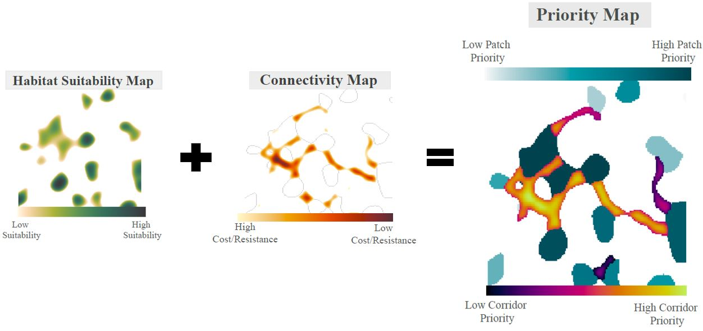

The goal of habicon is to calculate habitat patch and corridor priority in terms of their degree of importance to ecological connectivity. It is designed to integrate habitat suitability data (e.g., outputs of species distribution models) and connectivity/corridor data (e.g., outputs from connectivity models such as Circuitscape)
 Conceptual design where A) represents a habitat suitability map which models species presence and identifies resource patches, B) represents a connectivity map modeling movement between these patches, and C) is the result of combining A) and B), quantifying patch and corridor priority to maximize ecological connectivity.
habicon includes a few prep functions in addition to two main quantitative functions: patch_priority and corr_priority. patch_priority ranks individual patches based on multiple connectivity metrics, including quality-weighted area, weighted betweenness centrality, and dEC (a measure of patch importance to equivalent connectivity proposed by Saura et al. 2011). corr_priorty uses these patch locations and their priority metrics, along with corridor characteristics such as distance and resistance to movement, to create a continuous surface of corridor priority.
Below is a preliminary example of the prioritization maps that are created by habicon using simulated suitability and connectivity data.
habicon github page for more details and a walk through of all the functions currently available(And stay tuned, this project is still in the early stages of development)
habicon?While numerous studies have used both suitability and connectivity models in a conservation context, currently there is no easy way to integrate the two methods, particularly for landscape prioritization. While there are several other software programs that can perform habitat connectivity and prioritization analyses, some of these programs are not freely available and there is no tool that performs all these calculations in a single platform. The advantage of collating all these steps into a single R package is that the software is free, the entire process from pre-processing of input files to final map presentation is easily reproducible, and the process can be automated over numerous species, places, or time frames. The R programming language is one of the fastest growing coding languages, particularly for ecologists. As a publicly available and easy to execute package, this new toolset will expand the applicability of habitat suitability and connectivity models in addressing conservation issues and improve habitat patch and corridor prioritization, which is a vital step to effectively preserving biodiversity.